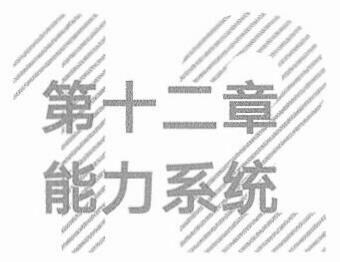

一、瑞幸的故事
如同酒精让酒这个品类存在，咖啡因也让咖啡这个品类存在。
中国人喝茶，西方人喝咖啡，背后都是对咖啡因提神的功能性需求。有功能价值打底，再叠加各种情绪价值要素，便产生了各种各样的咖啡饮品，然后形成了行业统一的“美式咖啡、拿铁咖啡、风味拿铁咖啡”菜单框架。
意大利人酷爱意式浓缩咖啡。传说，第二次世界大战期间，美国大兵来到欧洲战场，因为不习惯意式咖啡的浓厚，便往咖啡中添加热水，于是诞生了美式咖啡。
拿铁咖啡中的“拿铁”一词，在意大利语里面的意思是鲜奶，拿铁咖啡就是加了牛奶的咖啡。拿铁咖啡再加一些配料，就是风味拿铁，比如榛果拿铁、玫瑰拿铁，等等。
瑞幸入场前，中国咖啡馆的数量大约是10万家。这10万家咖啡馆都能提供美式咖啡、拿铁咖啡、风味拿铁咖啡这些传统产品。
但能做出这些产品，和能做出瑞幸公司，是两件事。
星巴克成为星巴克，瑞幸成为瑞幸，不是因为它们能做出美式咖啡、拿铁咖啡和风味拿铁咖啡，而是因为它们的模式。
337